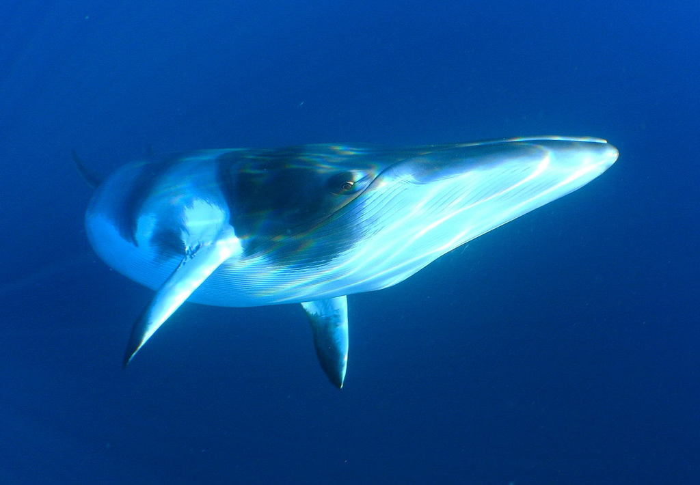

Balene cu fanoane
Balenele cu fanoane nu au dinți. Ele au plăci speciale numite fanoane, care le ajută să filtreze hrana din apă. Aceste balene se hrănesc în special cu krill și pești mici. Balena albastră, cel mai mare animal de pe Pământ, face parte din această categorie.

Balena albastră
Balena albastră este cel mai mare mamifer care a existat vreodată pe Pământ, fiind mai mare chiar și decât cei mai mari dinozauri. Ea poate ajunge la o lungime de aproximativ 30 de metri și poate cântări peste 150 de tone. Inima unei balene albastre este atât de mare încât poate cântări cât o mașină mică.
Această balenă trăiește în majoritatea oceanelor lumii și preferă zonele bogate în hrană. Se hrănește în principal cu krill, pe care le filtrează din apă cu ajutorul fanonelor. În fiecare zi, o balenă albastră poate consuma câteva tone de hrană.

Balena cu cocoașă
Balena cu cocoașă este cunoscută pentru comportamentul său spectaculos. Ea sare adesea deasupra apei și cade cu putere, un comportament care impresionează turiștii și cercetătorii. Aceste sărituri pot avea rol în comunicare sau în eliminarea paraziților.
Un alt aspect fascinant al acestei balene este „cântecul” ei. Masculii produc sunete complexe care pot dura zeci de minute și se repetă în mod regulat. Aceste cântece sunt folosite pentru comunicare și atragerea femelelor. Balena cu cocoașă migrează anual pe distanțe foarte lungi, deplasându-se din apele reci, bogate în hrană, spre apele calde, unde se reproduc.

Balena comună (Fin whale)
Balena comună, numită și Fin whale, este a doua cea mai mare balenă din lume, fiind depășită doar de balena albastră. Poate ajunge la o lungime de aproximativ 27 de metri și poate cântări peste 70 de tone. Corpul său este lung, subțire și aerodinamic, ceea ce îi permite să fie una dintre cele mai rapide balene.
Această specie trăiește în majoritatea oceanelor lumii, preferând apele adânci și deschise. Balena comună se hrănește prin filtrarea apei, consumând krill, plancton și pești mici. Este cunoscută pentru sunetele sale joase, care pot călători pe distanțe foarte mari prin apă.

Balena minke
Balena minke este una dintre cele mai mici balene cu fanoane, dar este foarte activă și rapidă. De obicei, ajunge la o lungime de aproximativ 7–10 metri. Există două specii principale: balena minke comună și balena minke antarctică.
Această balenă trăiește în aproape toate oceanele lumii, adaptându-se atât la apele reci, cât și la cele temperate. Este mai greu de observat decât alte balene, deoarece nu sare des la suprafață. Balena minke se hrănește cu pești mici, krill și plancton, folosind fanoanele pentru a filtra hrana din apă.